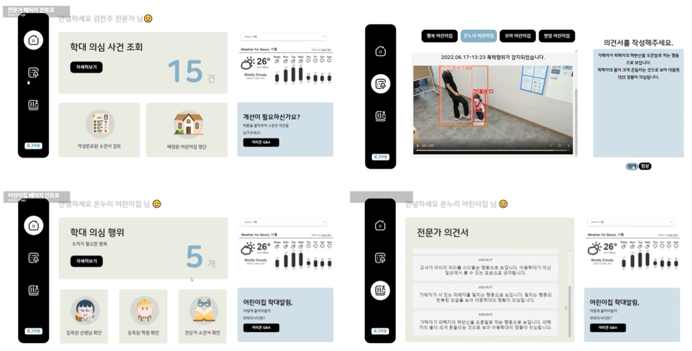
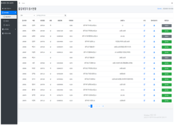
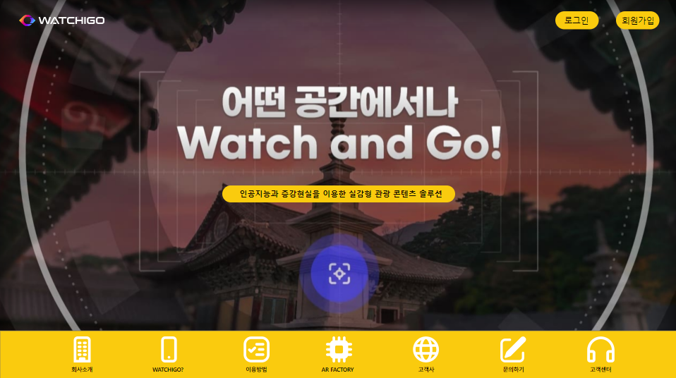
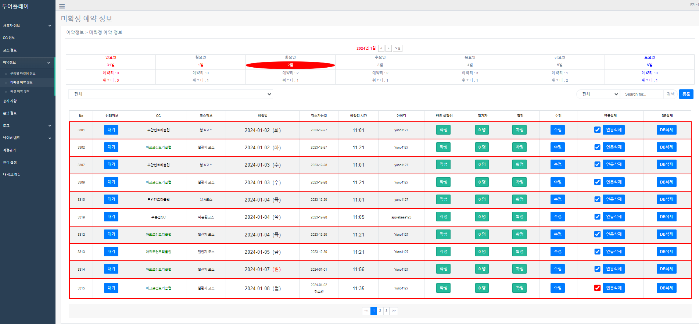
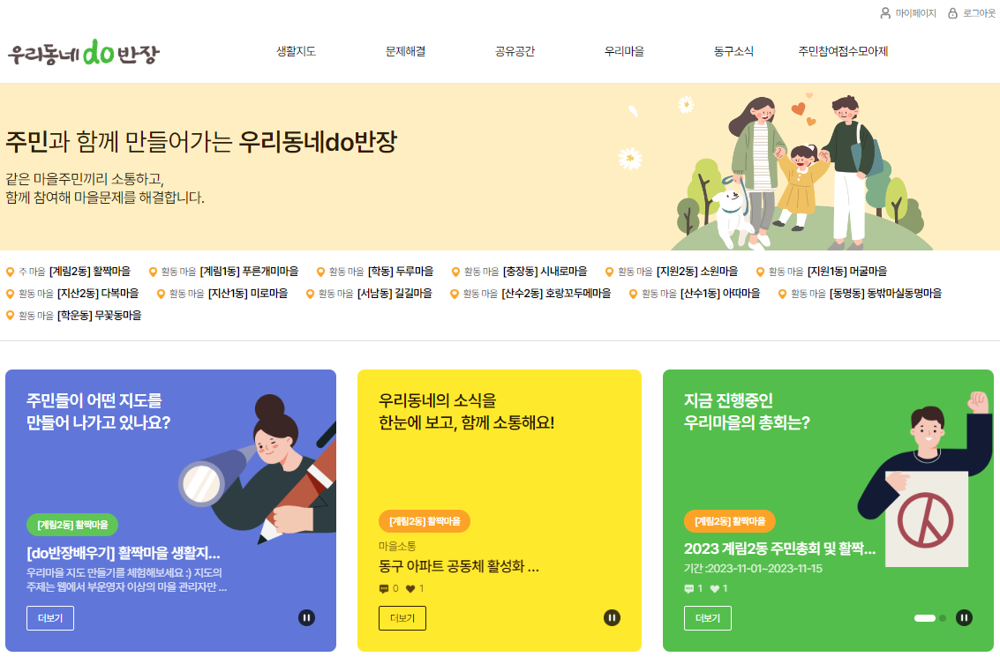

Introduction
안녕하세요.
저는 백엔드 개발자
이선재입니다.
백엔드 개발자로서, 학습한 내용을 실무에 적용하고
최신 개발 트렌드를 주시하며 개발 역량을 높이고 있습니다.
현재까지의 경험을 바탕으로 팀 내에서 주도적으로 일하고,
동료들과의 소통을 통해 효율적인 개발 환경을 조성하는 데 기여하고 있습니다.
계속해서 새로운 도전을 즐기며, 끊임없는 학습과 발전을 추구합니다.
스마트인재개발원
인공지능융합서비스 개발자과정
2022.01. - 2022.06.
Node.Js, Java, DB, Python, HTML, CSS, JS, Flask, Android, 등 여러가지 기본학습을 걸쳐
6개월간 팀단위로 총 3개의 프로젝트를 진행하였습니다.
엘페
2022.07. - 2023.04.
JPA를 처음 접하여 Spring FrameWork를 직접 학습해
실무에 적용하여 HTML,CSS를 활용 고등학교 입학원서 작성,관리 사이트,
Python을 활용 골프 자동예약 서비스 및 자사 웹 서비스를 개발하였습니다.
주식회사 엔유비즈
2023.05. ~
JPA, MyBatis 의 프레임워크를 적용해 공공기관 데이터 활용 웹 서비스 및
탄소중립 관련 웹 서비스의 RESTful API를 개발하였습니다.
SkillSet
사용하는 언어 및 프레임워크
개발 도구
Portfolio




Contact Me
- Phone : 010 - 2221 - 0325
- Email : lsj22210325@gmail.com
- Github : https://github.com/V2seon